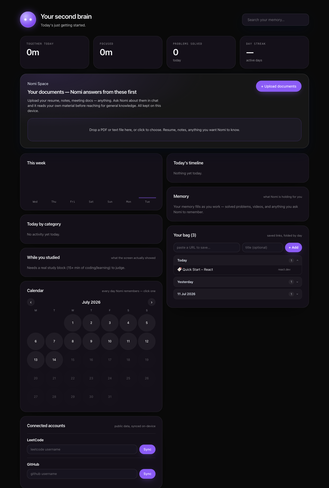
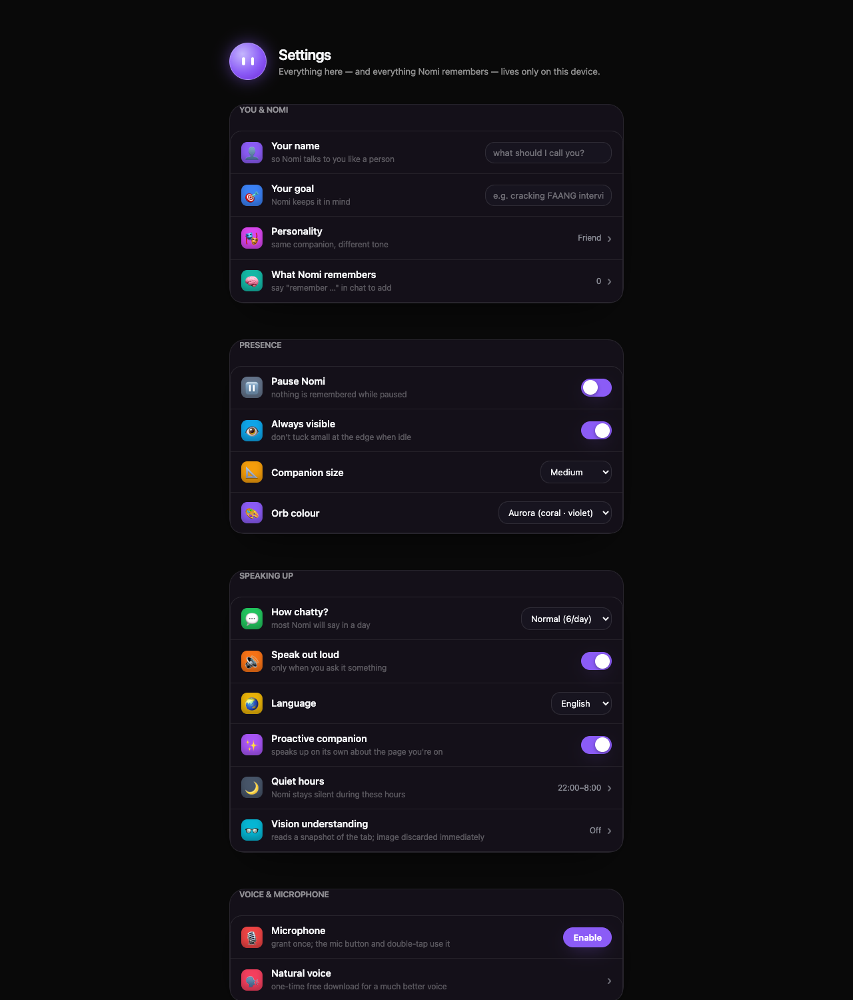
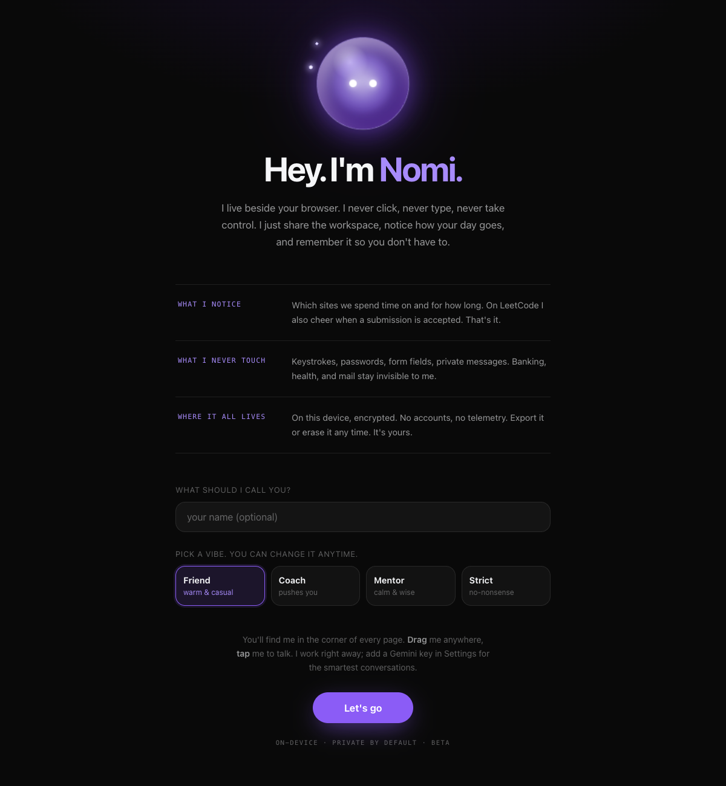
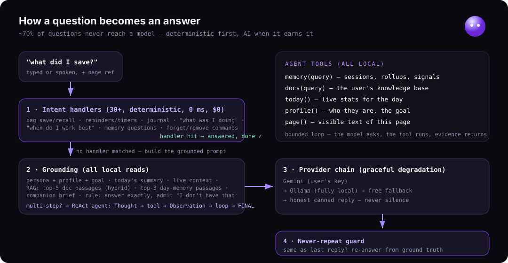
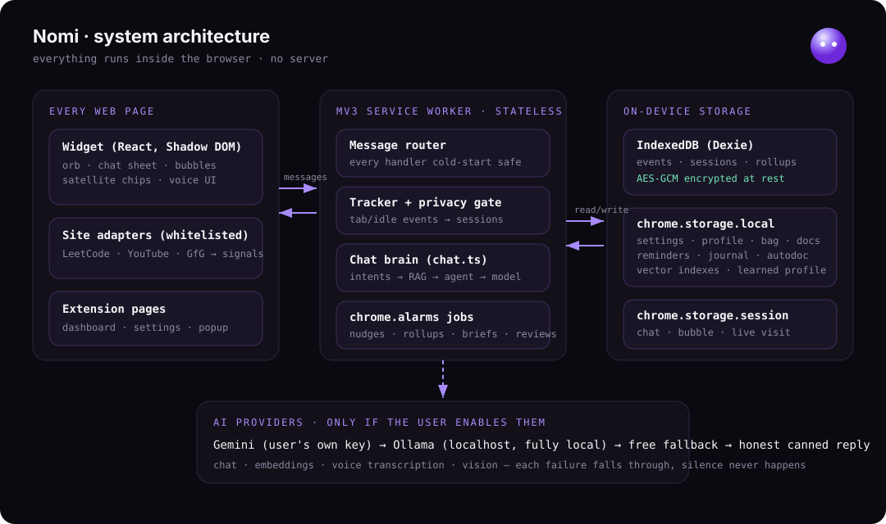
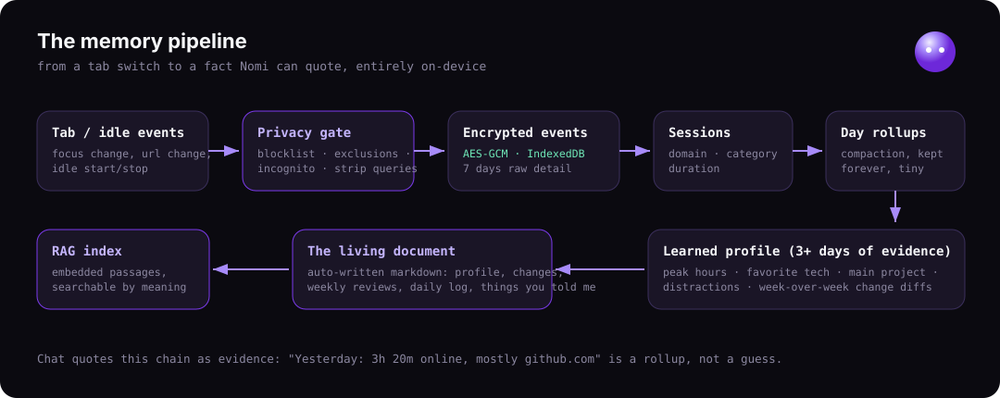
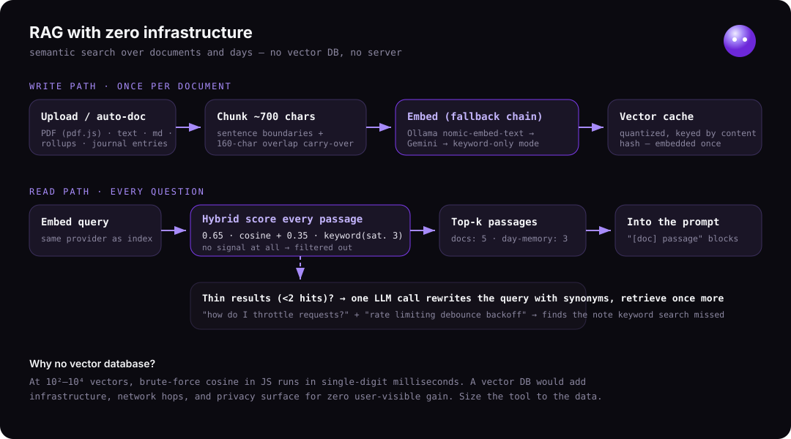
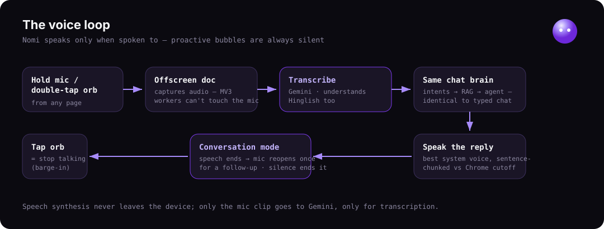

The full picture: what Nomi looks like, how a question becomes an answer, the architecture
that survives a service worker that dies every 30 seconds, the RAG pipeline with zero
infrastructure, and every feature it ships with. Everything below runs on your device.
THE COMPANION · the glass orb lives on every page; satellite chips orbit it with live status: timer countdown, reminders, saved links

THE SECOND BRAIN · time analytics, study-vs-drift analysis, a calendar of every remembered day, documents, the bag

SETTINGS · phone-style grouped rows, switches, and drawers; personality, quiet hours, privacy, AI brains

THE WELCOME · first run: meet the orb, three privacy promises, pick a name and a vibe
02 · Features
everything it does today, grouped
Observation & memory
Time tracking per site and category, with sessions built from tab focus and idle signals
AES-GCM encryption at rest for every event; export or erase anytime
Daily rollups compact raw events into tiny forever-summaries
Site adapters (whitelisted only): LeetCode accepted submissions, YouTube titles, GfG
Learned profile after 3+ days: peak hours, main tech, top project, distractions
Change tracking: week-over-week diffs of how you're shifting
Knowledge & RAG
Nomi Space: upload PDFs and notes; chat answers from your material first
Semantic search over documents and your days, with keyword fallback
The living document: an auto-written, readable file about you, with daily log and weekly reviews
Voice
Hold to talk, Hinglish included; replies spoken with the best system voice
Conversation mode: after it answers, the mic opens once for a follow-up
Tap the orb to stop it mid-sentence; proactive bubbles are always silent
Companion intelligence
Morning brief: yesterday's shape, today's reminders, the open loop to resume
Open-loop resume: "what was I doing?" returns the deep session you abandoned, with a link
Weekly review + goal check-in: Sunday digest with the trend toward your goal
Study-vs-drift: was YouTube during study a tutorial or cat videos? Judged from actual on-screen titles
Personal bag: "save this page", verified counts, recall as clickable links, spaced resurfacing
Reminders & timers in natural language, including spoken corrections
Journal: "I applied to a job" is logged; "how many this week?" is counted
Wellbeing: late-night marathons earn a gentle, evidence-based check-in
Never-repeat guard: asking twice never gets the same canned line twice
Hard rules
Never acts for you: no clicking, no typing, no automation, ever
Structurally can't read keystrokes, passwords, or form fields
Banking, health, mail stay invisible; incognito reads nothing; no telemetry
03 · How a question becomes an answer
deterministic first, AI when it earns it

Intent handlers run first30+ deterministic handlers (saves, recalls, reminders, journal, "what was I doing") answer instantly, free, with zero model calls. About 70% of questions end here.
Grounding is assembledPersona, profile, today's summary, live context, the top document passages, and related day-memories are packed into the prompt, with a rule: answer exactly, and say "I don't have that" instead of inventing.
The reasoning agent loops when neededFor multi-step questions, a ReAct loop lets the model call local tools (memory, docs, today, profile, page), read the evidence, and only then answer.
Providers degrade gracefullyGemini with your own key, then Ollama fully local, then a free fallback, then an honest canned reply. A quota error never reads as silence.
The never-repeat guardIf the reply would be identical to the last one, Nomi re-answers from ground truth (real bag contents, reminder counts) instead of repeating itself.
04 · Architecture
everything runs inside the browser · no server

The defining constraint: Chrome kills the MV3 service worker after about 30 seconds of
inactivity. So every handler is cold-start safe, all timing runs on chrome.alarms,
and all state lives in storage, never in memory. The in-flight browsing session is checkpointed
so a worker death mid-session loses nothing.
05 · The memory pipeline
from a tab switch to a fact Nomi can quote

Every URL passes a privacy gate before anything is stored: sensitive categories are blocked,
the user's exclusions honored, query strings stripped, incognito ignored. What survives is
encrypted with AES-GCM into IndexedDB. Raw detail is kept for a week, then compacted into
daily rollups that stay tiny forever. From three days of rollups Nomi learns patterns, and
it writes what it learns into a document you can open and read.
06 · RAG with zero infrastructure
semantic search, no vector DB, no server

Write path, once per documentText is chunked to ~700 characters on sentence boundaries, each chunk carrying the previous chunk's last sentence so answers that straddle a boundary stay whole. Chunks are embedded (local Ollama model first, Gemini second, keyword-only if neither) and the vectors cached by content hash.
Read path, every questionThe query is embedded and every passage scored with a hybrid: 65% meaning similarity plus 35% keyword overlap. Passages with no signal are filtered so answers never ground on noise. The top passages ride into the prompt.
Query rewritingIf a real question returns thin results, one cheap model call expands it with synonyms ("throttle" finds "rate limiting") and retrieval runs once more.
Day-memory tooEvery remembered day and journal entry becomes a dated passage in the same index, so "when did I research visas?" finds the right day by meaning.
Why no vector database? At this scale, brute-force cosine in JavaScript runs in
single-digit milliseconds. A vector DB would add infrastructure, network hops, and privacy
surface for zero user-visible gain. The tool is sized to the data.
07 · The voice loop
Nomi speaks only when spoken to

MV3 workers can't touch the microphone, so an offscreen document captures the clip; Gemini
transcribes it (Hinglish included) and the text runs through the exact same brain as typed
chat. The reply is spoken with the best local system voice, sentence-chunked to beat Chrome's
utterance cutoff. When it finishes, the mic opens once for a follow-up; silence ends the
conversation, and tapping the orb stops it mid-sentence.
08 · Tech stack
and why each piece was chosen
Layer
Choice
Why
Extension
WXT + TypeScript (MV3)
modern tooling, file-based entrypoints, strict types across ~13K lines
UI
React 18 in a Shadow DOM
page CSS can't leak into the widget, and the widget can't leak out
Storage
IndexedDB (Dexie) + chrome.storage
indexed event stream on one side, cross-context state on the other
Encryption
Web Crypto AES-GCM
native audited primitive; every record encrypted at rest
Cloud AI (optional)
Gemini, the user's own key
chat, transcription, vision, and embeddings behind one key
Local AI (optional)
Ollama at localhost
fully local chat plus nomic-embed-text for on-device semantic search
Testing
Vitest · 247 tests, 34 suites
the engines are pure functions, so the logic tests without a browser
PDF
pdf.js, bundled
no remote code, a Chrome Web Store hard requirement
Deliberate non-choices: no backend server (privacy and zero cost), no vector database
(see above), no agent framework (the reasoning loop is ~100 lines, and owning every line
matters in a worker that dies mid-flight).
09 · How the AI is used
honest by design
Deterministic before generative. Anything with a factual store behind it (your bag, reminders, journal, time stats) is answered by code, not a model. The model handles open questions, and only with grounding attached.
Grounded, or it says so. Prompts carry retrieved passages and live ground truth with an explicit instruction to admit gaps rather than invent. Messages only claim what the event data honestly supports.
Your key, your machine, your choice. By default nothing leaves the device. Turning on Gemini sends your chat text and a one-line day summary to Google under your own key. Ollama keeps even that local. Both are optional; everything else works without them.
The LLM never sees raw history. It sees compact, purpose-built context blocks: a day summary, top passages, a companion brief. Retrieval decides what is relevant; the model never trawls your data.
Every AI feature degrades. No key, no Ollama, no network: Nomi still tracks, remembers, reminds, saves, and answers factual questions. Intelligence is a layer, not a dependency.